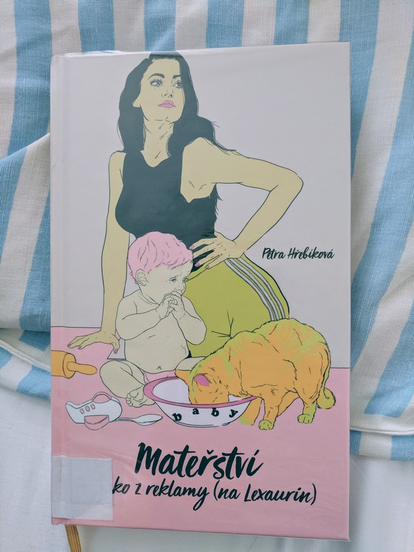
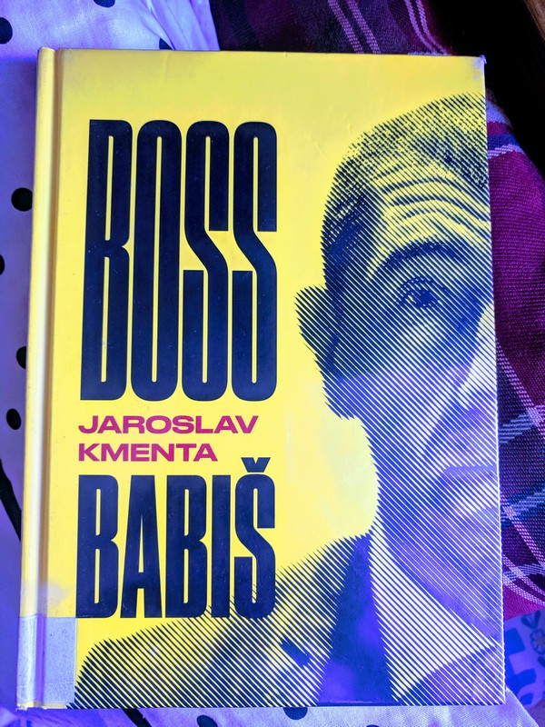
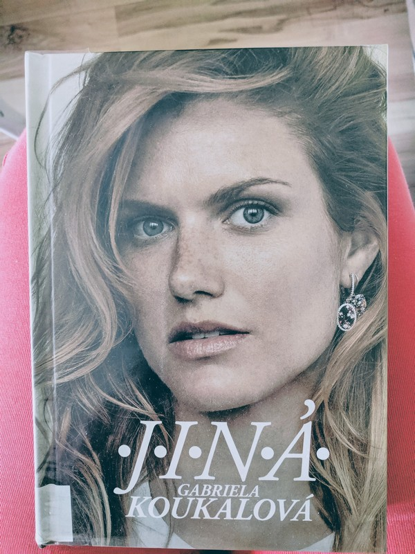

Tentokrát malinko hojnější, protože jsme trávili skoro celý červen u prarodičů, a tak bylo toho času na čtení o něco víc než obvykle.
Petra Hřebíková - Mateřství jako z reklamy (na Lexaurin)
No, asi už jste se smířili s tím, že tu a tam se v literární rubrice něco na mateřskou notu objeví. Budiž však vám i mně útěchou, že se jedná o tragikomické čtivo, jako v tomto případě glosy Petry Hřebíkové, která v nich - věrna svému pseudonymu - uhodila hřebíček na hlavičku. Věřte, že každá máma se občas potřebuje utvrdit v tom, že existuje někdo, kdo je na tom minimálně stejně blbě jako ona. Nebo i hůř :D A kapitolu o chození s dětmi do restaurace bych tesala do kamene :D!!

Jaroslav Kmenta - Boss Babiš
Kniha z o poznání vážnějšího soudku. Kmentova rozsáhlá reportáž zaměřená na jednoho z nejmocnějších mužů této země přináší celou řadu dosud nepublikovaných informací o Babišově podnikatelském zrodu či jeho napojení na politickou scénu. Samozřejmě v knize nechybí ani mediálně provařené kauzy typu “Čapí hnízdo” či nákup Mafry, Kmenta ovšem vytahuje na světlo i mnoho jiných, neméně pobuřujících odhalení. Za tím vším je bezesporu obrovská spousta mravenčí práce, nad níž nezbývá než smeknout. Ač je těch informací na jednu publikaci možná až příliš a čtenář se musí celou dobu pečlivě soustředit, aby mu neutekly všechny souvislosti (což se mi, přiznávám, ne vždy dařilo), jedno je jisté - Kmenta odvedl skvělou novinářskou práci. Kéž by otevřela oči všem, kteří Babišovi a jeho hnutí skočili v uplynulých volbách na lep…

Martin Moravec, Gabriela Koukalová - JINÁ
Jeden čas byla tato biografie asi nejpopulárnější české biatlonistky skloňována ve všech médiích. Vzpomínám si, jak jsem seděla (ještě s obřím těhotenským pupkem) u našich, koukala na zahájení olympiády a listovala novinama, kde se nemluvilo o ničem jiném, než že na ní Gabriela Koukalová bude chybět. Když vyšla tato kniha, vyvolalo to možná ještě větší pozdvižení. A teď už chápu proč. Že svět vrcholového sportu není procházka růžovou zahradou, o tom asi nikdo nepochybuje. Pokud je nicméně pravda vše, co se v knize píše, realita je ještě o poznání děsivější. A to nemluvím jen o tlaku na váhu sportovců, o němž se v médiích psalo nejvíce, ale i o intrikách a vztazích v zákulisí biatlonu. Jak může někdo tak obrovský nápor přežít a ještě vyhrávat zlaté medaile, to je mi záhadou. Každopádně jsem tuto drtivě upřímnou zpověď zhltla téměř na posezení a nestačila jsem se divit, co všechno se může skrývat za úspěchem a popularitou naší biatlonové jedničky…
